标定方法
全景售后标定有手动标定和模拟产线标定两种方法，选择其一即可，但标定前需要进行摄像头升级（图片为示意，请按照车型进入相应的路径。）
一、手动标定方法和步骤
-
按照场地要求布置标定场地，将车辆摆放在标定区域，并确保车辆各摄像头无遮挡、胎压正常、前后保安装到位、后视镜处于展开状态、各车门关闭到位。

检查项目
序号
检查项目
要求
1 摄像头
前\后\左\右摄像头无遮挡、无灰尘
2 轮胎
轮胎胎压正常
3 前后保险杠
前后保安装到位，紧固
4 后视镜
左右后视镜处于自然展开状态
5 车门
车门关闭到位
6 背门
后备箱门关闭到位
-
打开360全景系统，并将诊断仪通过OBD-Ⅱ口与车辆相连，检查并确保诊断仪软件处于最新版本；
-
点击诊断仪界面，进入…\长安汽车\启源Q05\THU\诊断数据版本\特殊功能\摄像头升级请求，点击摄像头升级按钮，确认进入摄像头升级，摄像头升级完成后屏幕未提示故障，全景界面无图像倒置，摄像头升级成功，方可进行售后标定；
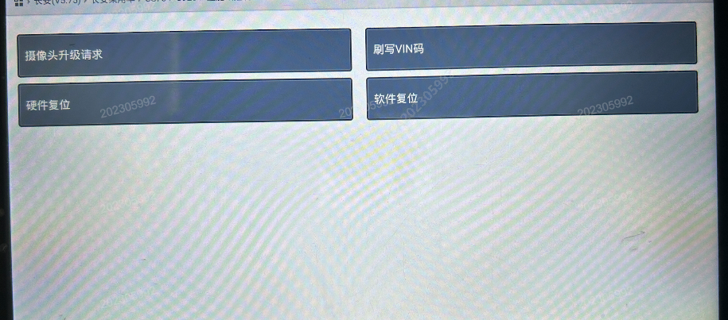
-
车辆上电，打开全景影像并点击 3D 按钮，进入全景 3D 界面，循环点击屏幕右上角和右下角 3 次，出现弹框，点击“1.2米售后手动标定”按钮，定过程中请勿移动车辆，车机显示注意事项，点击确认；
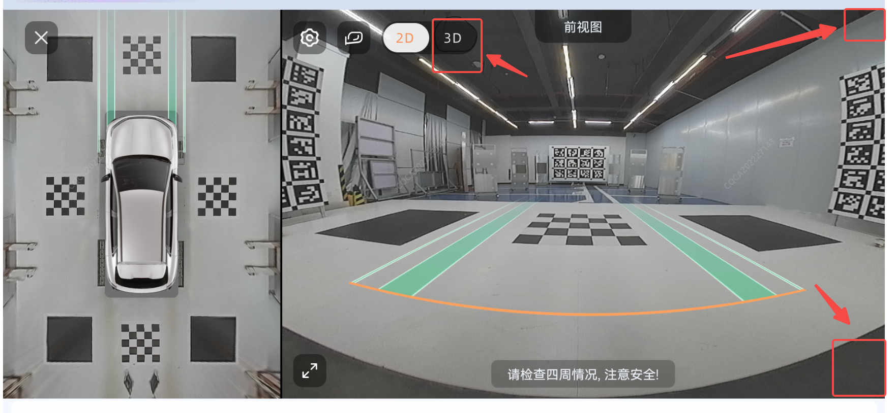
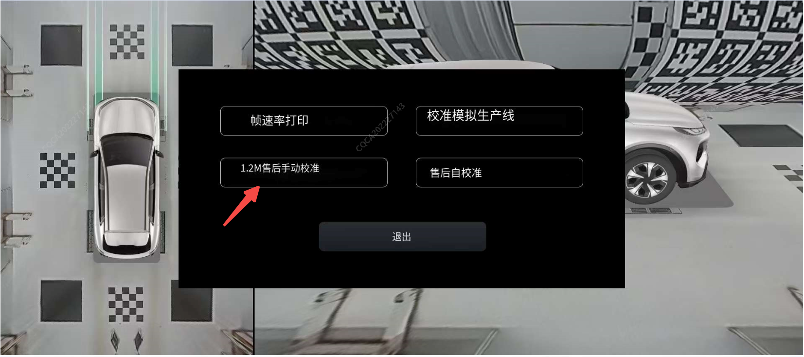
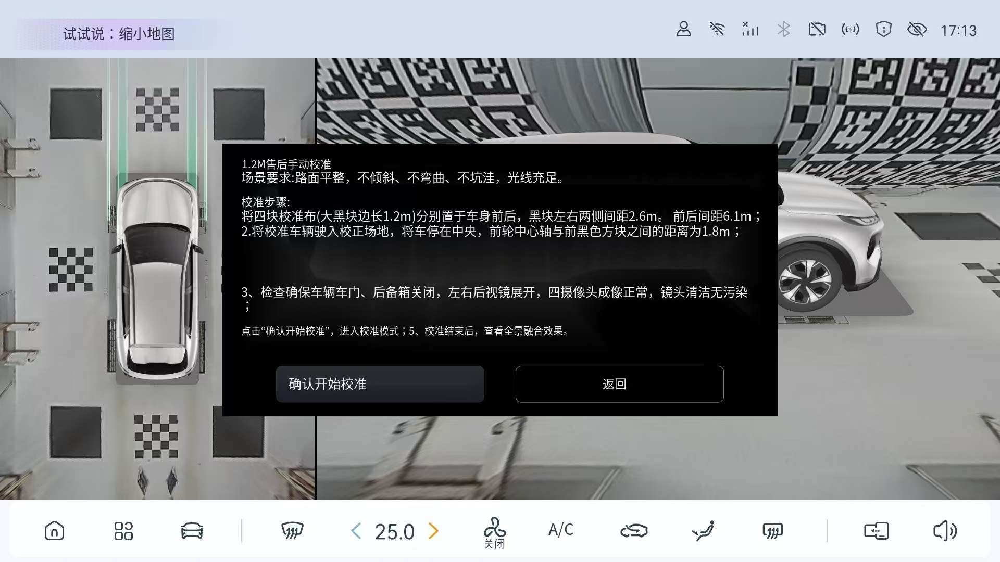
-
点击“点1”（或“点2/3/4/5/6/7/8”），进入点调整界面，车机上选中的点颜色变成橙色；

-
点击“上移”（或“下/左/右移”），选中的点将向上（或下/左/右）移动一个像素；通过上下左右移动调整，保证十字中心与对应的标定块边角重合；
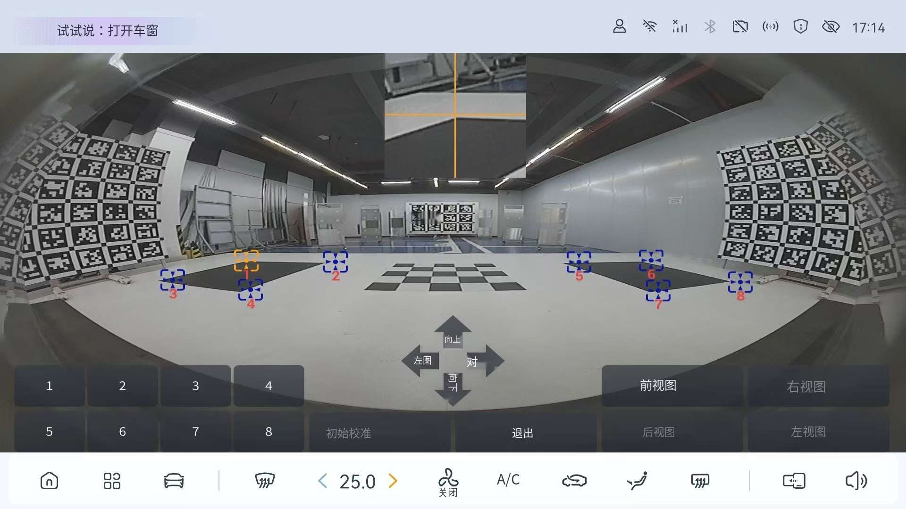
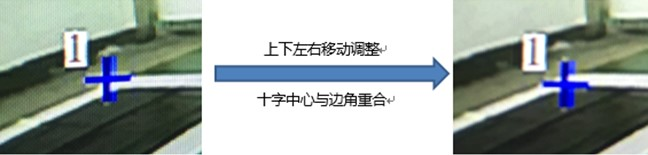
-
将“点1”调整到对应位置后，点击“返回”，选择“点2”等，重复步骤5，将8个点均移动到对应的标定块边角位置。
注：选择“点5/6/7/8”时，需先点击”进入点5/6/7/8”,再进行选点。

-
完成“前视图”的所有点移动后，点击“返回”，选择“后视图”等，重复步骤4/5/6，保证前/后/左/右四个视图中所有点都移动到对应的边角位置。

-
将前/后/左/右四个视图中所有点都移动到对应位置后，点击“开始标定”，并确认；车机屏幕将显示标定过程，约1分钟后，提示“标定成功”，即完成标定工作；
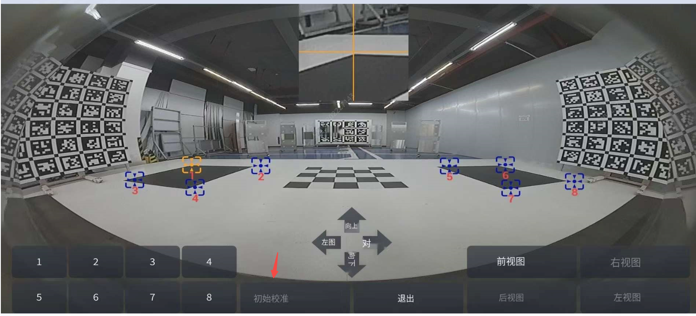
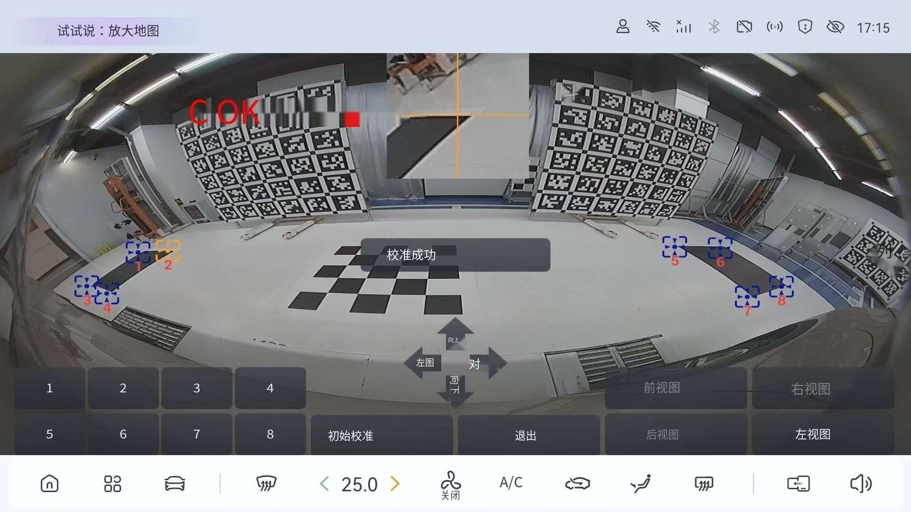
-
待360全景系统重启后，检查标定结果，确保全景拼接图中标定块不存在重影现象；若标定结果不理想，可重复之前的标定流程，调整部分点的位置，重新标定。
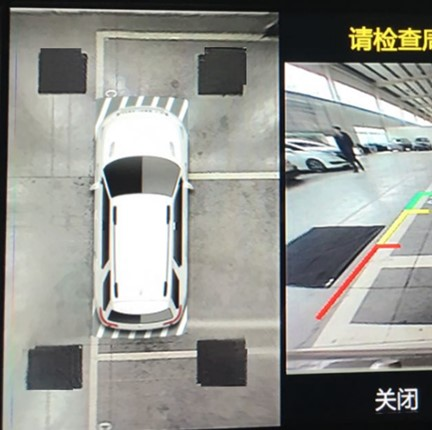
二、售后模拟产线自动标定方法和步骤
-
完成标定场地准备和摄像头升级参考上述步骤1、2、3后，车辆上电，打开全景影像并点击 3D 按钮，进入全景 3D 界面，循环点击屏幕右上角和右下角 3 次，出现弹框，点击“模拟产线标定”按钮，定过程中请勿移动车辆，车机显示标定成功后退出

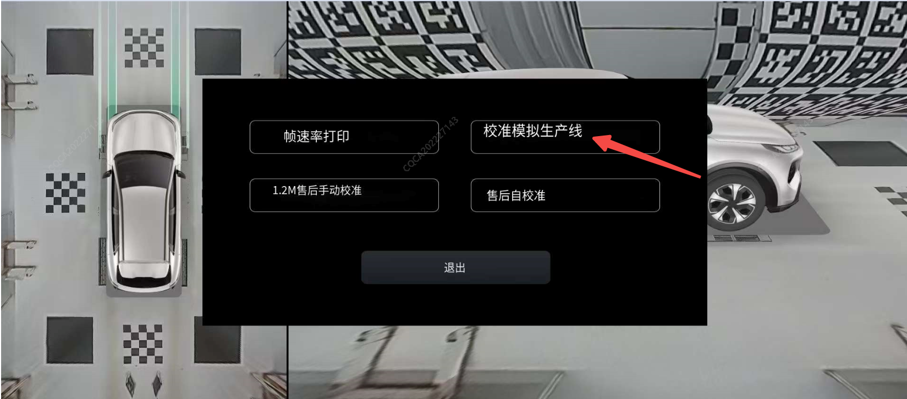

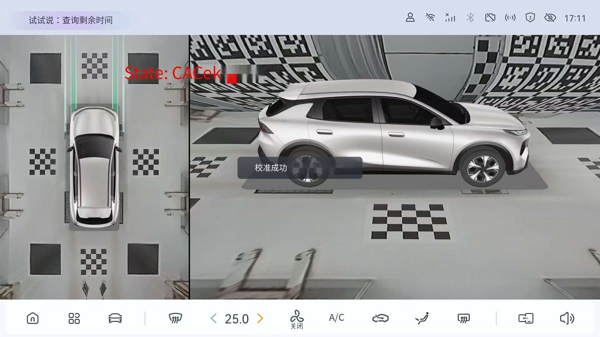
待360全景系统重启后，检查标定结果，确保全景拼接图中标定块不存在重影现象，若标定结果不理想，可重新标定。